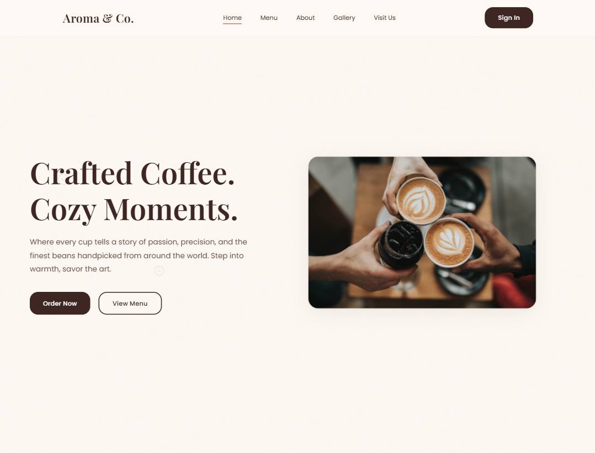
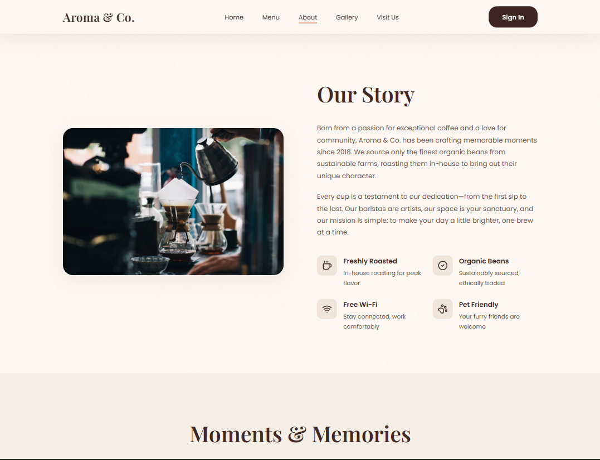
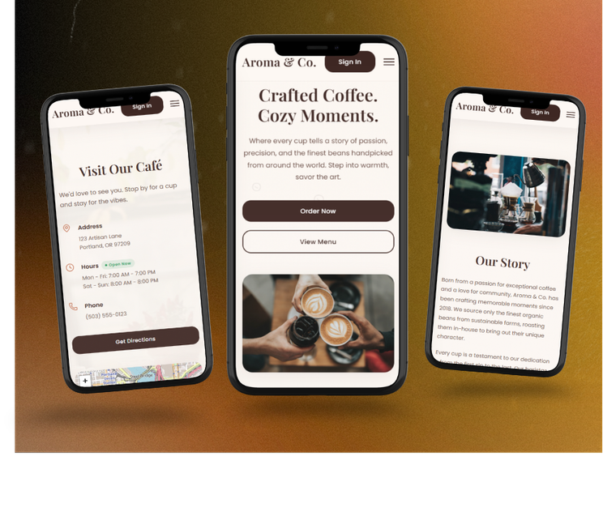

Menu showcase
Food and drink items with images, descriptions and categories.
Case study: Cafe website with a database
A cafe site backed by a live Supabase database: a public menu for customers and a dashboard where staff can update it.
Building a cafe website is easy. Building one where the menu is managed through a live database is where the real work begins.
The main challenge was integrating Supabase: setting up tables, configuring authentication, and connecting live data to the frontend without breaking the visual experience.
The dashboard needed careful UX so staff could update menu items without any technical knowledge.
Food and drink items with images, descriptions and categories.
A simple admin view to add, edit and remove menu items.
Database tables, authentication and data synced between the dashboard and the public site.
Both the public site and the dashboard work on mobile, tablet and desktop.



I chose a warm look (deep browns, amber tones and editorial type) so the site feels like a brand, not just a menu list.
I designed the Supabase schema for menu items, categories and orders, with row-level security and authentication so the dashboard is protected.
Built with simplicity first. Dashboard actions write to Supabase so changes show up on the public site.
The menu leads with photos and category filters. I refined every breakpoint so it feels as good on a phone.
Open the deployed project or go back to my other work.